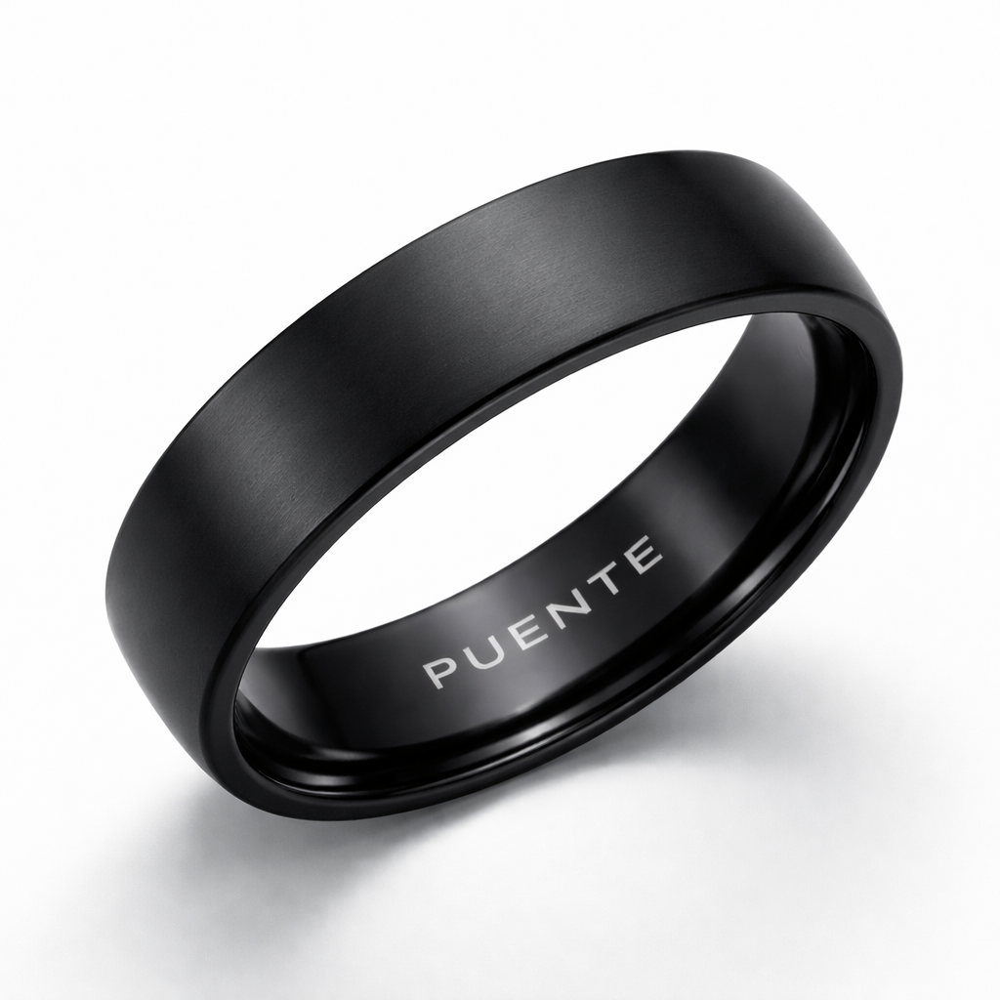

Every person has a story worth knowing
You are surrounded by people with extraordinary stories. A ring that makes sure those stories get heard.
She cleaned McDonald's bathrooms. She put herself through university. She got her CPA license. She bought her own house. She lives next door to you. And you have never heard her story - because nobody ever asked.
Millions of people are surrounded every day but never seen. Their stories go untold. Not because the stories aren't worth telling - but because the world never made space to hear them.
Zirconia Ceramic / BlackThe same ceramic found in luxury watchmaking. Scratch-proof, waterproof, no battery, no charging. A ring you wear every day that carries who you are - and makes sure people know it.
How it works
Open the app and talk. Your name, where you come from, what you do, what you love. AI clones your voice and speaks your words in any language. Not a robot. You.
Hold your ring near any phone. No app needed on their side. Your story appears - your voice, in their language. Three seconds. You just became visible.
Shared interests light up. You both play soccer. You're both from Ecuador. You both have kids at the same school. What was invisible becomes visible. Now you have a reason to talk.
"My name is Maria. I came from Guayaquil twelve years ago. I cleaned bathrooms. I got my degree. I bought my house. Nobody on my street knows any of this - until now."
Spoken by Maria. Heard in English.
Also available in Espanol / Portugues / Creole
Seen for the first time
Every ring carries someone's story. These are the people who have been here all along - you just never knew.
"I do hair for women on my block. Half of them don't know I also raised two boys alone, built a business from nothing, and still send money home every month. They've never asked."
"I'm a carpenter. I build kitchens, decks, furniture. But every job I've gotten has been through another Brazilian. The American families on my street don't know what I do - they've never seen me."
"My neighbors are from five different countries. I wave at them every morning but I've never had a real conversation. I want to know who they are. I just don't know how to start."
Founding community
Puente starts in Danbury, CT - one of the most culturally rich small cities in America. Dominicans, Ecuadorians, Brazilians, Haitians, Americans - all living side by side. Surrounded but not seen.
The first 100 rings are not just a product. They are the beginning of a community that refuses to let people stay invisible.
Every founding member gets their name in the app as an original bridge builder. You're not buying a ring. You're making someone visible - starting with yourself.
Your story matters
First 100 rings ship soon. Pre-order guarantees your spot.
No subscription. No hidden fees. Ships to your door.